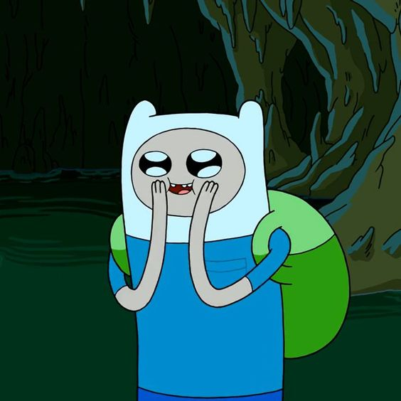
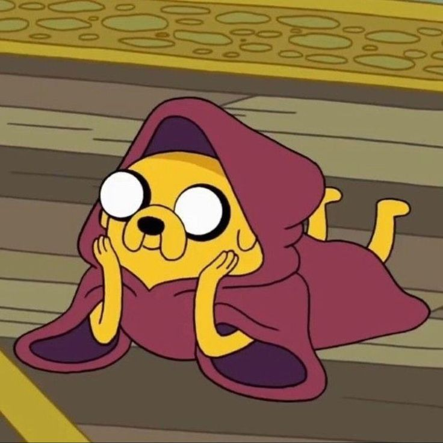
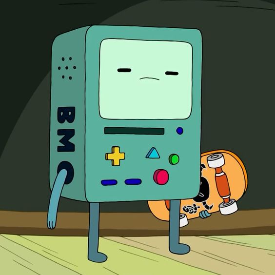

Finn o Humano
The human
Finn é um garoto humano de 17 anos, que junto com seu irmão Jake, vive procurando aventuras pela Terra de Ooo, salvando as pessoas de perigos e seres do mal.

Jake
The Dog
Jake, o Cão é um dos personagens principais de Hora de Aventura. Ele é um híbrido de cão/metamorfo, referido pelos outros como um "cão mágico". É o maior companheiro do humano Finn, seu irmão adotivo. Jake é casado com a iriscórnia Lady Irís e tem 5 filhos.

BMO
The Game Boyy
BMO (abreviação de "Be More", "Ser Mais", em português), é um videogame e computador criado por Moseph Mastro Giovani, e que logo depois se tornou de Finn e Jake. BMO é caracterizado como um amigo leal, confiante, companheiro e útil, grande protetor dos irmãos.